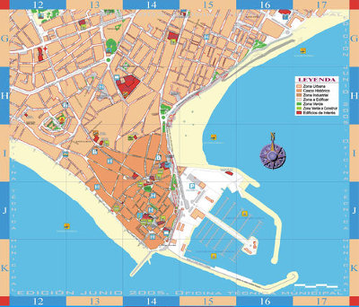

Las Campañas profondos pueden llevarse a cabo a lo largo de todo el año. ¿Existe un mejor momento? SI, cuando el Grupo necesita dinero para un proyecto, evento o programa específico, o cuando se está embarcando en una campaña educativa particular o para sumar miembros. Por supuesto, se deben anticipar estas necesidades con bastante anterioridad, de manera que tengan tiempo suficiente para planear su campaña profondos y de este modo las actividades de su programa contarán con los fondos y colaboradores necesarios.
Al elegir un momento específico, se aplican algunos principios del sentido común: Si su campaña profondos se llevará a cabo al aire libre, realícenlo en una fecha en que el clima sea templado, (a menos que sea un evento del estilo de carnaval playero). Si están recaudando dinero para uniformes, asegúrense de que los miembros estén cerca para ayudarlos. Si están recaudando fondos para combatir una enfermedad, no compitan con otras campañas relacionadas con la salud que hayan sido programadas con anterioridad. Y aunque las personas son a menudo donantes más generosos durante las fiestas navideñas, también suelen tener menos tiempo para asistir a eventos; en esta ocasión es cuando podrían preferir recaudar dinero a través del correo.
Ejemplo: Un nuevo patio de juegospara niños
Un pueblo pagó su nuevo patio de juegos para niños con un "Paseo Primaveral" por los jardines más hermosos de los residentes.
El paseo en realidad se planeó durante el otoño, pero se llevó a cabo durante la temporada primaveral, en Mayo. Las personas compraron un boleto y recibieron un mapa con la ubicación de los jardines en su pueblo. Durante el día, los residentes se la pasaron manejando y visitando los jardines del otro.
La campaña obtuvo casi 100% de ganancias y todo el dinero fue destinado directamente a comprar accesorios para el patio de juegos. (Este es además un buen ejemplo de como recaudar dinero usando los recursos con los que ya cuenta la comunidad).